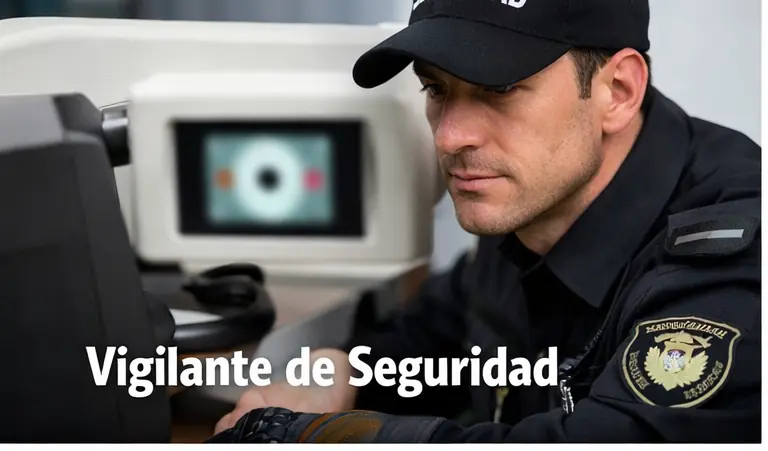

En Psicotécnicos San Fermín, centro autorizado DGT M-0569, realizamos el psicotécnico para Seguridad Privada de forma rápida y profesional. Incluye foto gratuita y envío telemático según corresponda.
Calle de la Mezquita 5, 28041, Madrid (Usera). Si estás por Usera o alrededores, llegas rápido.
Sí. Foto gratuita y envío telemático según corresponda.
No es obligatoria, pero recomendamos pedir cita para evitar esperas.
Tenemos el precio más bajo de Madrid en psicotécnicos oficiales.

Esta web cumple con el RGPD y no utiliza cookies. Lee la Política de Privacidad y los Avisos Legales.